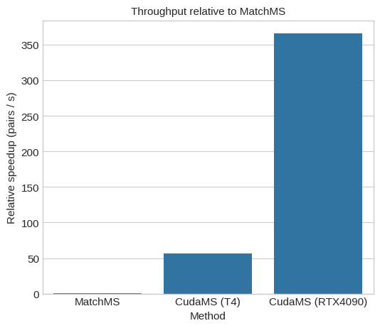
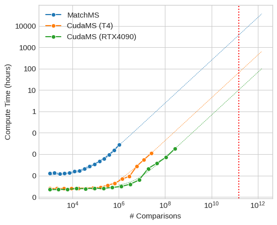

In this report, we describe how we developed a CUDA-accelerated version of CosineGreedy.
This is a short report that will focus on existing and prior practical problems during development, as well as
a brief note on performance of the module.
Introduction describes the field of metabolomics in the most general terms and
introduces CudaMS
Methods section describes what has and hasn't worked throghout the project, as well
explain the reasoning technical decisions of the CudaCosineGreedy.
Results section presents our evaluation of the main algorithm, and it's comparison to
other papers
Discussion section describes the main limitations of the approach and our
suggestions on how to improve it
Background
This work is in the field of metabolomics.
Metabolomics is the scientific study of chemical processes involving metabolites, the small
molecule substrates, intermediates, and products of cell metabolism. Specifically, metabolomics is the
"systematic study of the unique chemical fingerprints that specific cellular processes leave behind", the study
of their small-molecule metabolite profiles.
In biochemistry, a metabolite is an intermediate or end product of metabolism ... Understanding
how pharmaceutical compounds are metabolized and the potential side effects of their metabolites is an important
part of drug discovery.
In particular, the main task of which CudaMS is but a single step, is scanning bio-material (i.e. plant matter)
by mass spectrometry and finding similarities between the scanning results and results of already-known
chemicals from a large database, say, the GNPS
dataset
Mass spectrometry (MS), also called mass spec, is an analytical technique that is used to measure the
mass-to-charge ratio of ions. The results are presented as a mass spectrum, a plot of intensity as a function
of the mass-to-charge ratio. Mass spectrometry is used in many different fields and is applied to pure samples
as well as complex mixtures.
Mass spectrometry has both qualitative and quantitative uses. These include identifying unknown
compounds, determining the isotopic composition of elements in a molecule, and determining
the structure of a compound by observing its fragmentation.
The assumption is that if some scanning results consistently have high similarity with already-known compounds,
then the scanned matter likely contains those compounds. In other words, this could mean detecting an
aspirin-like chemical in a common houseplant.
MatchMS and CudaMS
Analysis of large volume of mass spectrometry data requires computation. The "gold standard" in open-source
mass-spectrometry data analysis is a python package called MatchMS.
MatchMS is a versatile open-source Python package developed for importing, processing, cleaning, and comparing
mass spectrometry data (MS/MS). It facilitates the implementation of straightforward, reproducible workflows,
transforming raw data from common mass spectra file formats into pre- and post-processed spectral data, and
enabling large-scale spectral similarity comparisons.
The critical part of the matchms pipeline is calculating the similarity between pairs of sets of spectra. A robust algorithm for comparing spectra is CosineGreedy, which is also the focus of this report.
The cosine score aims at quantifying the similarity between two mass spectra.
The score is calculated by finding best possible matches between peaks
of two spectra. Two peaks are considered a potential match if their
m/z ratios lie within the given 'tolerance'. The underlying peak assignment problem is here solved in a ‘greedy’ way.
The CosineGreedy algorithm is useful for processing noisy spectrometry data, since it allows for a "tolerance" amount of error in measured spectrum when comparing against a known compound dataset. Unfortunately, this robustness requires solving an underlying peak assignment problem, for every pair of spectra. The time complexity for comparing sets of spectra is thus O(R * Q * N * M), where R, Q is size of the two spectral sests, and N, M is the number of peaks (length of spectra) in each set.
This issue makes it computationally infeasible to calculate pairwise similarity using MatchMS, beyond 1010 pairs, as the estimated time it will take MatchMS to finish calculations is more than 200 hours.

Processing speed, compared to MatchMS.

Time it takes for an out-of-the-box similarity implementation to compare first N GNPS entries.